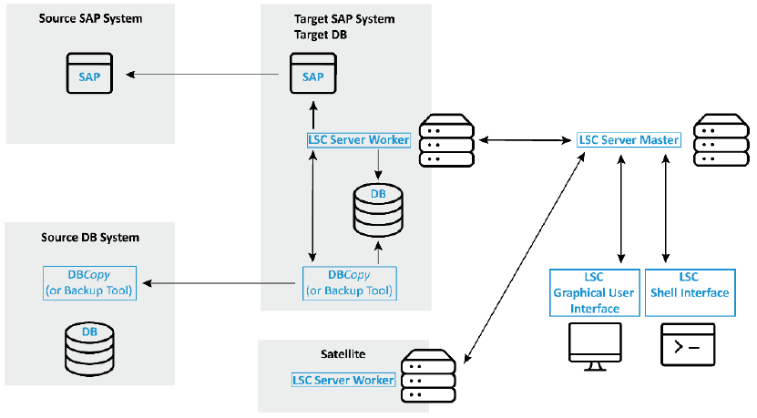
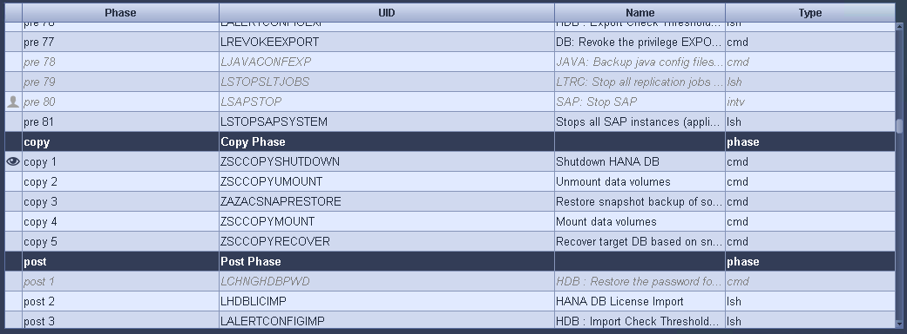
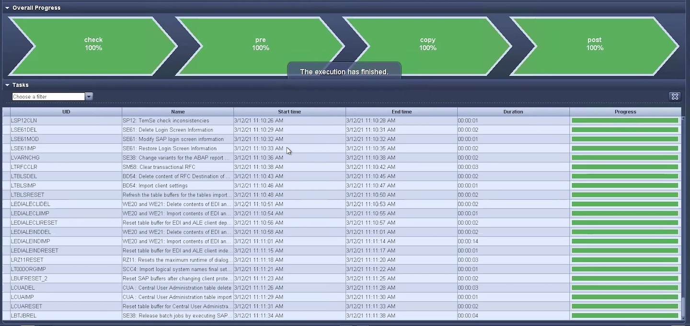

Demander de modifier un document
Demander de modifier un document Modifier sur GitHub
Modifier sur GitHub Guide des contributeurs
Guide des contributeursMise à jour du système SAP HANA avec LSC, AzAcSnap et Azure NetApp Files
Contributeurs
À l’aide de "Azure NetApp Files pour SAP HANA", Oracle et DB2 sur Azure fournissent aux clients les fonctionnalités avancées de gestion et de protection des données de NetApp ONTAP avec le service Microsoft Azure NetApp Files natif. "AzAcSnap" Constitue le socle des opérations de mise à jour du système SAP très rapides pour créer des copies NetApp Snapshot cohérentes au niveau des applications pour les systèmes SAP HANA et Oracle (DB2 n’est pas pris en charge par AzAcSnap).
Les sauvegardes de copies Snapshot, créées à la demande ou régulièrement dans le cadre de la stratégie de sauvegarde, peuvent ensuite être clonées efficacement sur de nouveaux volumes et utilisées pour actualiser rapidement les systèmes cibles. AzAcSnap fournit les flux de travail nécessaires pour créer des sauvegardes et les cloner sur de nouveaux volumes, tandis que Libelle SystemCopy effectue les étapes de pré et post-traitement nécessaires à une actualisation complète du système de bout en bout.
Dans ce chapitre, nous décrirons une mise à jour automatisée du système SAP avec AzAcSnap et libelle SystemCopy utilisant SAP HANA comme base de données sous-jacente. AzAcSnap étant également disponible pour Oracle, la même procédure peut également être mise en œuvre à l’aide d’AzAcSnap pour Oracle. D’autres bases de données pourraient être prises en charge par AzAcSnap à l’avenir, ce qui permettrait ensuite d’activer des opérations de copie système pour ces bases de données avec LSC et AzAcSnap.
La figure suivante montre un flux de travail général type d’un cycle de vie d’actualisation d’un système SAP avec AzAcSnap et LSC :
-
Installation initiale et préparation unique du système cible.
-
Opérations de prétraitement SAP exécutées par LSC.
-
Restauration (ou clonage) d’une copie Snapshot existante du système source vers le système cible effectuée par AzAcSnap.
-
Opérations de post-traitement SAP effectuées par LSC.
Le système peut ensuite être utilisé comme système de test ou d’assurance qualité. Lorsqu’une nouvelle actualisation du système est demandée, le flux de travail redémarre à l’étape 2. Les volumes clonés restants doivent être supprimés manuellement.

Conditions préalables et limites
Les conditions préalables suivantes doivent être remplies.
AzAcSnap est installé et configuré pour la base de données source
En général, il existe deux options de déploiement pour AzAcSnap, comme le montre l’illustration suivante.

AzAcSnap peut être installé et exécuté sur une VM Linux centrale pour laquelle tous les fichiers de configuration de BD sont stockés de manière centralisée et AzAcSnap a accès à toutes les bases de données (via le client hdbsql) et aux clés de magasin d’utilisateurs HANA configurées pour toutes ces bases de données. Dans le cas d’un déploiement décentralisé, AzAcSnap est installé individuellement sur chaque hôte de base de données où, en général, seule la configuration de base de données pour la base de données locale est stockée. Les deux options de déploiement sont prises en charge pour l’intégration LSC. Cependant, nous avons adopté une approche hybride dans la configuration de ce document en laboratoire. AzAcSnap a été installé sur un partage NFS central avec tous les fichiers de configuration de la base de données. Ce partage d’installation central a été monté sur toutes les machines virtuelles de /mnt/software/AZACSNAP/snapshot-tool. L’exécution de l’outil a ensuite été effectuée localement sur les machines virtuelles DB.
Libelle SystemCopy installé et configuré pour le système SAP source et cible
Les déploiements de Libelle SystemCopy comprennent les composants suivants :

-
LSC Master. comme son nom l’indique, c’est le composant maître qui contrôle le flux de travail automatique d’une copie système basée sur libelle.
-
LSC Worker. un travailleur LSC s’exécute généralement sur le système SAP cible et exécute les scripts requis pour la copie automatisée du système.
-
LSC satellite. un satellite LSC fonctionne sur un système tiers sur lequel d’autres scripts doivent être exécutés. Le maître LSC peut également remplir le rôle d’un système de satellites LSC.
L’interface utilisateur graphique libelle SystemCopy (LSC) doit être installée sur une machine virtuelle adaptée. Dans cette configuration de laboratoire, l’interface utilisateur LSC a été installée sur une machine virtuelle Windows séparée, mais elle peut également s’exécuter sur l’hôte DB avec le worker LSC. Le travailleur LSC doit être installé au moins sur la VM du DB cible. Selon l’option de déploiement AzAcSnap choisie, d’autres installations de travail LSC peuvent être nécessaires. Vous devez disposer d’une installation LSC worker sur la machine virtuelle sur laquelle AzAcSnap est exécuté.
Une fois LSC installé, la configuration de base de la base de données source et cible doit être effectuée conformément aux directives LSC. Les images suivantes présentent la configuration de l’environnement de laboratoire pour ce document. Pour plus de détails sur les bases de données et les systèmes SAP source et cible, reportez-vous à la section suivante.

Vous devez également configurer une liste de tâches standard appropriée pour les systèmes SAP. Pour plus de détails sur l’installation et la configuration de LSC, consultez le manuel d’utilisation LSC qui fait partie du package d’installation LSC.
Limites connues
L’intégration d’AzAcSnap et de LSC décrite ici ne fonctionne que pour les bases de données SAP HANA à hôte unique. Il est également possible de prendre en charge des déploiements SAP HANA à plusieurs hôtes (ou scale-out), mais de tels déploiements nécessitent quelques ajustements ou améliorations des tâches personnalisées LSC pour la phase de copie et les scripts sous-estimer. Ces améliorations ne sont pas couvertes dans ce document.
L’intégration des mises à jour des systèmes SAP utilise toujours la dernière copie Snapshot réussie du système source pour procéder à la mise à jour du système cible. Si vous souhaitez utiliser d’autres anciennes copies Snapshot, la logique correspondante dans le ZAZACSNAPRESTORE la tâche personnalisée doit être ajustée. Ce processus n’est pas périmètre pour ce document.
Configuration de laboratoire
La configuration en laboratoire consiste en un système SAP source et un système SAP cible, tous deux exécutés sur des bases de données SAP HANA à hôte unique.
L’illustration suivante montre la configuration du laboratoire.

Il contient les systèmes, les versions logicielles et les volumes Azure NetApp Files suivants :
-
P01. BASE DE DONNÉES SAP HANA 2.0 SP5. Base de données source, hôte unique, locataire d’utilisateur unique.
-
PN1. SAP NETWEAVER ABAP 7.51. Système SAP source.
-
vm-p01. SLES 15 SP2 avec AzAcSnap installé. VM source hébergeant P01 et PN1.
-
QL1. BASE DE DONNÉES SAP HANA 2.0 SP5. Base de données cible de mise à jour du système, hôte unique, locataire à un seul utilisateur.
-
QN1. SAP NETWEAVER ABAP 7.51. Système SAP cible de mise à jour du système.
-
vm-ql1. SLES 15 SP2 avec le travailleur LSC installé. Serveur virtuel cible hébergeant QL1 et QN1.
-
LSC master version 9.0.0.0.052.
-
vm- lsc-master. Windows Server 2016. Héberge le maître LSC et l’interface utilisateur LSC.
-
Volumes Azure NetApp Files pour les données, le journal et partagés pour P01 et QL1 montés sur les hôtes DB dédiés.
-
Volume Azure NetApp Files central pour les scripts, l’installation d’AzAcSnap et les fichiers de configuration sur toutes les machines virtuelles.
Premières étapes de préparation unique
Avant de pouvoir exécuter la première mise à jour du système SAP, vous devez intégrer les opérations de stockage basées sur la copie et le clonage Azure NetApp Files Snapshot exécutées par AzAcSnap. Vous devez également exécuter un script auxiliaire pour démarrer et arrêter la base de données et monter ou démonter les volumes Azure NetApp Files. Toutes les tâches requises sont exécutées en tant que tâches personnalisées dans LSC dans le cadre de la phase de copie. L’image suivante montre les tâches personnalisées dans la liste des tâches LSC.

Les cinq tâches de copie sont décrites plus en détail ici. Dans certaines de ces tâches, un exemple de script sc-system-refresh.sh Est utilisé pour automatiser davantage l’opération de restauration de base de données SAP HANA requise et le montage et démontage des volumes de données. Le script utilise un LSC: success Message dans la sortie du système pour indiquer que l’exécution a réussi à LSC. Vous trouverez des détails sur les tâches personnalisées et les paramètres disponibles dans le manuel d’utilisation LSC et le guide du développeur LSC. Toutes les tâches de cet environnement de laboratoire sont exécutées sur la machine virtuelle de base de données cible.

|
L’exemple de script est fourni en l’état et n’est pas pris en charge par NetApp. Vous pouvez demander le script par e-mail à ng-sapcc@netapp.com. |
Fichier de configuration Sc-system-refresh.sh
Comme mentionné précédemment, un script auxiliaire est utilisé pour démarrer et arrêter la base de données, monter et démonter les volumes Azure NetApp Files et restaurer la base de données SAP HANA à partir d’une copie Snapshot. Le script sc-system-refresh.sh Sont stockés sur le partage NFS central. Le script nécessite un fichier de configuration pour chaque base de données cible qui doit être stocké dans le même dossier que le script lui-même. Le fichier de configuration doit avoir le nom suivant : sc-system-refresh-<target DB SID>.cfg (par exemple sc-system-refresh-QL1.cfg dans cet environnement de laboratoire). Le fichier de configuration utilisé ici utilise un SID de BD source fixe/codé en dur. Avec quelques modifications, le script et le fichier de configuration peuvent être améliorés pour prendre le SID du DB source en tant que paramètre d’entrée.
Les paramètres suivants doivent être réglés en fonction de l’environnement spécifique :
# hdbuserstore key, which should be used to connect to the target database
KEY=”QL1SYSTEM”
# single container or MDC
export P01_HANA_DATABASE_TYPE=MULTIPLE_CONTAINERS
# source tenant names { TENANT_SID [, TENANT_SID]* }
export P01_TENANT_DATABASE_NAMES=P01
# cloned vol mount path
export CLONED_VOLUMES_MOUNT_PATH=`tail -2 /mnt/software/AZACSNAP/snapshot_tool/logs/azacsnap-restore-azacsnap-P01.log | grep -oe “[0-9]*\.[0-9]*\.[0-9]*\.[0-9]*:/.* “`
ZSCCOPYSHUTDOWN
Cette tâche arrête la base de données SAP HANA cible. La section Code de cette tâche contient le texte suivant :
$_include_tool(unix_header.sh)_$ sudo /mnt/software/scripts/sc-system-refresh/sc-system-refresh.sh shutdown $_system(target_db, id)_$ > $_logfile_$
Le script sc-system-refresh.sh prend deux paramètres, le shutdown Commande et le DB SID pour arrêter la base de données SAP HANA à l’aide de sapcontrol. La sortie système est redirigée vers le fichier journal LSC standard. Comme indiqué précédemment, un LSC: success le message est utilisé pour indiquer que l’exécution a réussi.

ZSCCOPYUMOUNT
Cette tâche a démonté l’ancien volume de données Azure NetApp Files depuis le système d’exploitation de la base de données cible. La section de code de cette tâche contient le texte suivant :
$_include_tool(unix_header.sh)_$ sudo /mnt/software/scripts/sc-system-refresh/sc-system-refresh.sh umount $_system(target_db, id)_$ > $_logfile_$
Les mêmes scripts que dans la tâche précédente sont utilisés. Les deux paramètres réussis sont le umount Et le DB SID.
ZAZACSNAPRESTORE
Cette tâche exécute AzAcSnap pour cloner la dernière copie Snapshot réussie de la base de données source vers un nouveau volume pour la base de données cible. Cette opération équivaut à une restauration redirigée de sauvegarde dans des environnements de sauvegarde traditionnels. Toutefois, la fonctionnalité de copie Snapshot et de clonage vous permet d’effectuer cette tâche en quelques secondes même pour les bases de données les plus volumineuses. En revanche, avec les sauvegardes classiques, cette tâche peut facilement prendre plusieurs heures. La section de code de cette tâche contient le texte suivant :
$_include_tool(unix_header.sh)_$ sudo /mnt/software/AZACSNAP/snapshot_tool/azacsnap -c restore --restore snaptovol --hanasid $_system(source_db, id)_$ --configfile=/mnt/software/AZACSNAP/snapshot_tool/azacsnap-$_system(source_db, id)_$.json > $_logfile_$
Documentation complète pour les options de ligne de commande AzAcSnap pour le restore Vous trouverez la commande dans la documentation Azure ici : "Effectuez des restaurations à l’aide de l’outil Azure application cohérente Snapshot". L’appel suppose que le fichier de configuration de la base de données json pour la base de données source se trouve sur le partage NFS central avec la convention de nommage suivante : azacsnap-<source DB SID>. json, (par exemple, azacsnap-P01.json dans cet environnement de laboratoire).
|
|
Comme la sortie de la commande AzAcSnap ne peut pas être modifiée, la valeur par défaut LSC: success le message ne peut pas être utilisé pour cette tâche. Par conséquent, la chaîne Example mount instructions La sortie AzAcSnap est utilisée comme code retour réussi. Dans la version 5.0 GA d’AzAcSnap, cette sortie n’est générée que si le processus de clonage a réussi.
|
La figure suivante montre le message de réussite de la restauration d’AzAcSnap vers un nouveau volume.

ZSCCOPYMOUNT
Cette tâche monte le nouveau volume de données Azure NetApp Files sur le se de la base de données cible. La section de code de cette tâche contient le texte suivant :
$_include_tool(unix_header.sh)_$ sudo /mnt/software/scripts/sc-system-refresh/sc-system-refresh.sh mount $_system(target_db, id)_$ > $_logfile_$
Le script sc-system-refresh.sh est de nouveau utilisé, en transmettant le mount Commande et SID du BDD cible.
ZSCCOPYRECOVER
Cette tâche exécute une restauration de base de données SAP HANA de la base de données système et de la base de données des locataires sur la copie Snapshot restaurée (clonée). L’option de récupération utilisée ici concerne la sauvegarde de base de données spécifique, comme aucun fichier journal supplémentaire, qui est appliqué pour la récupération par transfert. Par conséquent, le délai de restauration est très court (quelques minutes au maximum). L’exécution de cette opération est déterminée par le démarrage de la base de données SAP HANA qui se produit automatiquement après le processus de restauration. Pour accélérer le démarrage, le débit du volume de données Azure NetApp Files peut être temporairement augmenté si nécessaire, comme décrit dans cette documentation Azure : "Augmentation ou réduction dynamiques des quotas de volume". La section de code de cette tâche contient le texte suivant :
$_include_tool(unix_header.sh)_$ sudo /mnt/software/scripts/sc-system-refresh/sc-system-refresh.sh recover $_system(target_db, id)_$ > $_logfile_$
Ce script est de nouveau utilisé avec le recover Commande et SID du BDD cible.
Opération de mise à jour du système SAP HANA
Dans cette section, un exemple d’opération de rafraîchissement des systèmes de laboratoire montre les principales étapes de ce flux de travail.
Des copies Snapshot régulières et à la demande ont été créées pour la base de données source P01, comme indiqué dans le catalogue de sauvegardes.

Pour l’opération de mise à jour, la dernière sauvegarde a été utilisée le 12 mars. Dans la section des détails de la sauvegarde, l’ID de sauvegarde externe (EBID) pour cette sauvegarde est répertorié. Il s’agit du nom de la copie Snapshot de la sauvegarde de copie Snapshot correspondante sur le volume de données Azure NetApp Files, comme illustré ci-dessous.

Pour lancer l’opération d’actualisation, sélectionnez la configuration correcte dans l’interface utilisateur LSC, puis cliquez sur Démarrer l’exécution.

LSC commence à exécuter les tâches de la phase de vérification, suivies des tâches configurées de la phase préliminaire.

Comme dernière étape de la pré-phase, le système SAP cible est arrêté. Dans la phase de copie suivante, les étapes décrites dans la section précédente sont exécutées. Tout d’abord, la base de données SAP HANA cible est arrêtée, et l’ancien volume Azure NetApp Files est démonté du système d’exploitation.

La tâche ZAZACCSNAPRESTORE crée ensuite un nouveau volume sous forme de clone à partir de la copie Snapshot existante du système P01. Les deux images suivantes montrent les journaux de la tâche dans l’interface utilisateur LSC et le volume Azure NetApp Files cloné dans le portail Azure.


Ce nouveau volume est ensuite monté sur l’hôte de la BDD cible, et la base de données système et la base de données des locataires sont restaurés à l’aide de la copie Snapshot contenant. Une fois la restauration terminée, la base de données SAP HANA démarre automatiquement. Ce démarrage de la base de données SAP HANA occupe la plupart du temps de la phase de copie. Les étapes restantes s’exécutent en quelques secondes à quelques minutes, quelle que soit la taille de la base de données. L’image suivante montre comment la base de données système est récupérée à l’aide des scripts de récupération python fournis par SAP.

Après la phase de copie, LSC continue avec toutes les étapes définies de la phase post. Lorsque le processus d’actualisation du système est terminé, le système cible est de nouveau opérationnel et entièrement utilisable. Avec ce système de laboratoire, la durée d’exécution totale de la mise à jour du système SAP était d’environ 25 minutes, dont la phase de copie occupait tout juste moins de 5 minutes.
